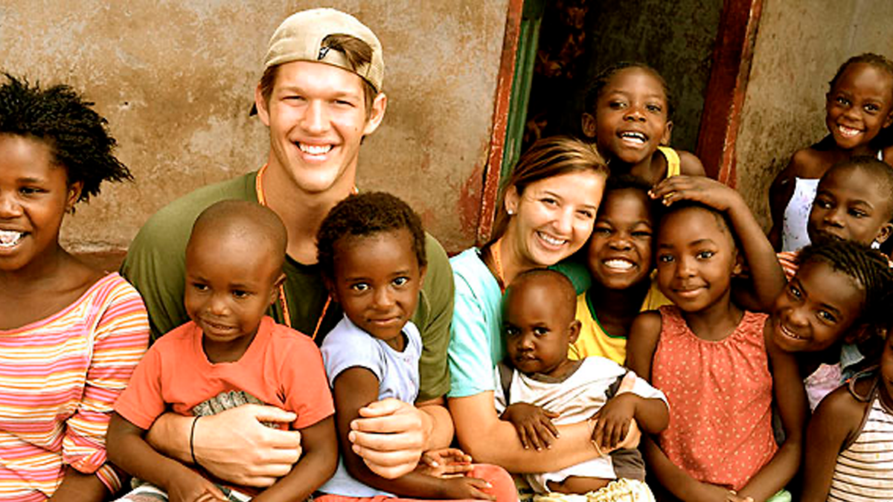
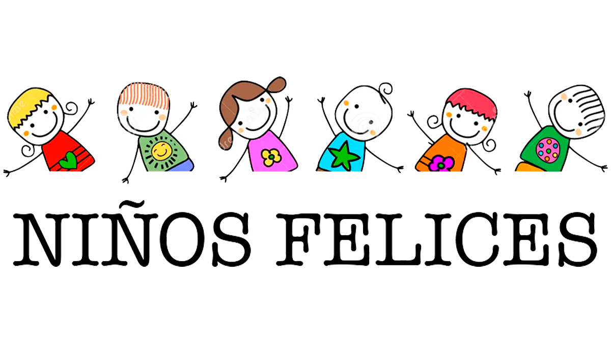

QUIENES SOMOS
La Fundación Niños Felices es un faro de esperanza y amor dedicado a mejorar la vida de los niños más necesitados. Nuestra misión es simple pero poderosa: brindar alegría, apoyo y oportunidades a aquellos pequeños que enfrentan desafíos en sus vidas. A través de programas de alimentación, educación y atención médica, trabajamos incansablemente para asegurar que cada niño tenga la oportunidad de crecer rodeado de cuidado y felicidad. Con el compromiso de nuestra comunidad de voluntarios y donantes, estamos construyendo un mundo donde cada niño pueda sonreír con alegría y vivir con dignidad. Juntos, estamos creando un futuro más brillante y esperanzador para los niños felices de mañana.

QUE NOS DEFINE
La Fundación Niños Felices se define por su compromiso inquebrantable con el bienestar integral de los niños más necesitados. Nuestra esencia radica en la creencia de que cada niño merece vivir una vida plena y feliz, independientemente de su situación socioeconómica. Nos distingue nuestra dedicación a proporcionar no solo ayuda material, sino también amor, compasión y apoyo emocional a cada niño que cruzamos en nuestro camino.

Además, nuestra transparencia, integridad y eficacia en el uso de recursos nos caracterizan, garantizando que cada contribución se traduzca en un impacto real y tangible en la vida de los niños a los que servimos. En resumen, somos definidos por nuestro compromiso con la felicidad, el bienestar y el futuro de los niños, guiados por el firme propósito de hacer del mundo un lugar mejor para las generaciones venideras.